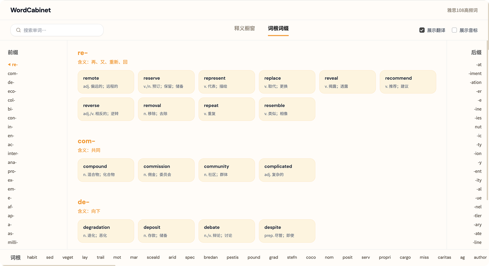

Supabase
云端实时驱动
基于 Supabase 后端，实现毫秒级的数据同步与安全访问。
The Hero Header
拒绝死记硬背，带你读懂 108 个高频单词 的生长基因。
Features · The Why
在「词根词缀」视图里，前缀、词根、后缀被拆成可点击的结构件——不是背字母，而是读一条生长链。
Live preview

Etymology lab · scroll for depth
Technical · The How
把复杂留给系统，把清爽留给你。
Supabase
基于 Supabase 后端，实现毫秒级的数据同步与安全访问。
GitHub Pages
持续集成发布，确保你访问的是最新、最稳的版本。
AI Workflow
AI 辅助重构复杂数据模型，打造人机协作的开发范式。